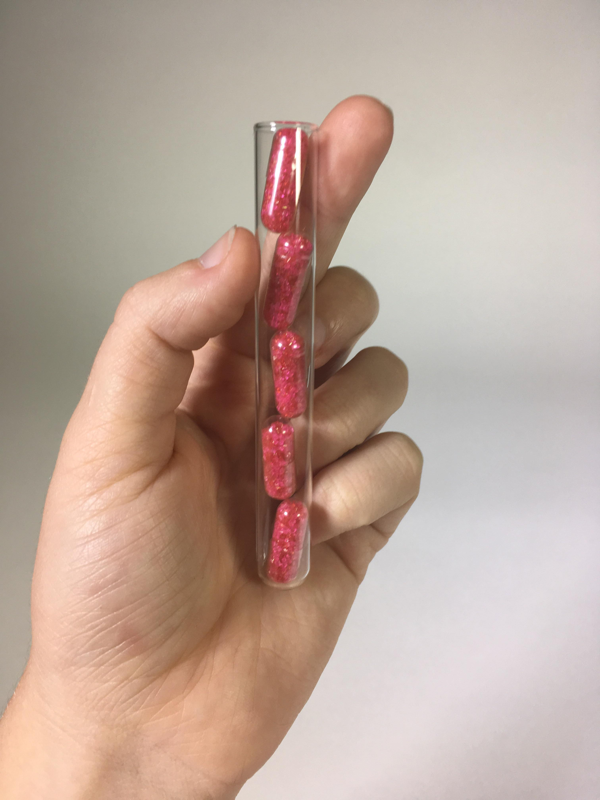

Nostrum Pills is a satirical company that my team and I developed for a final project in Design Innovation 190: Critical Practices. By developing a wellness pod, creative branding, an online platform, and a social media presence, we critiqued the wellness supplement culture that has become so prevalent in the modern day. This work was done with Heidi Dong, Hailey Windsor, Francesca Spektor, and Justine Chia.

The first step in this experience is visiting our online website where the user takes a quiz in which they answer a series of questions. This our first step to getting to know the user better. In actuality, our group doesn’t collect any of this data. In actuality, it’s a series of redirected pages that gives the illusion of an online quiz customized to your responses.

Next, the user proceeds to one of our “wellness centers”. We advertise our wellness center as a “360 scanner senses your presence and aura, and reads all the vital signs. Our proprietary algorithms then compute and create the perfect pill for you. A sample pill will emerge from the box.” In actuality it is a pod photocell that senses light being blocked which triggers a pill to be released by a mechanism controlled by a servo. This element was developed primarily by my groupmates, Hailey Windsor, Francesca Spektor, and Justine Chia.

We have also developed an aesthetically pleasing instagram feed and online landing page to keep out customers engaged. Not only do they get an idea of the product they’ll be buying, but the lifestyle they’ll be a part of once they subscribe to our product.

Working on the Nostrum Pills project was an incredible experience. My group was filled with talented and motivated individuals that all worked towards a common vision. In the future, if we were to continue to this project, I could see it becoming an actual, purchasable item where we could track its actual influence on users that don’t know it’s an art project.